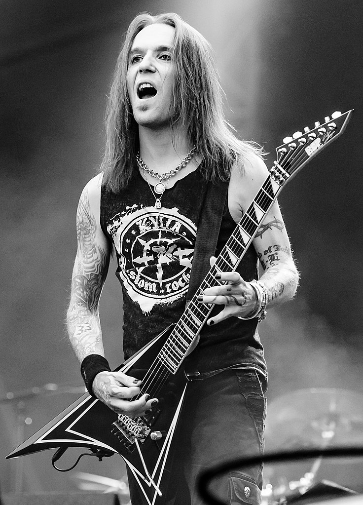
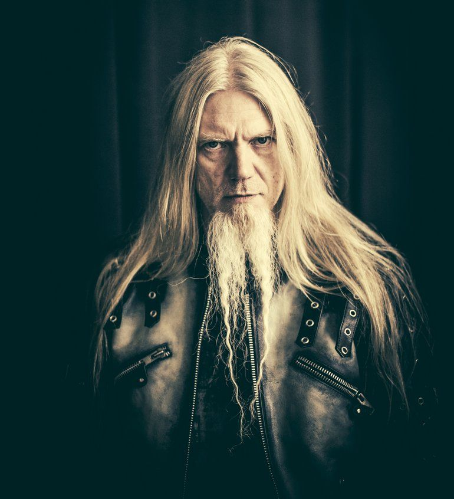
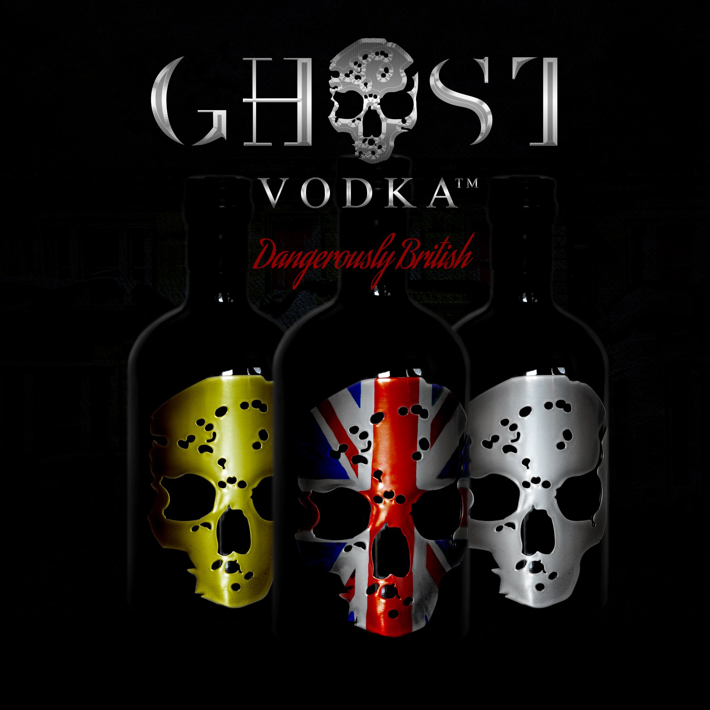

Že si smrtka bere muzikanty, kteří v šedesátých a sedmdesátých letech patřili k průkopníkům
rockové muziky, s tím je třeba v novém miléniu počítat. Na sklonku loňského roku si však
přišla i pro muže, který byl na odchod na druhý břeh až příliš mlád. Začátkem ledna se objevila
zpráva, že ve věku pouhých 41 let zemřel Alexi Laiho, kytarista a kapelník CHILDREN OF BODOM.

Začátkem roku 2021 protnul sevření neutuchající pandemické křeče blesk. Tak zčistajasna přiletěla zpráva
o smrti Alexiho Laiha, zakladatele CHILDREN OF BODOM, temného básníka death metalu a nezkrotného rošťáka,
který ochutnal svět plnými doušky. Konkrétní datum úmrtí ani jeho příčinna oficiálně zveřejněny nebyly,
ve vyjádření managmentu stijí jen to, že se Laiho "v posledních letech potýkal s dlouhodobými zdravotními
problémy.
Vesmír rockové kytary přišel rázem o jednu z klíčových postav uplynulého čtvrtstoletí. Finský virtuos,
který bojoval s démony v textech i vlastním životě, odešel příliš brzy. Jeho věčně trpící duše však našla
svůj klid. Bohužel právě ve chvíli, kdy se nadechoval k další muzikantské etapě. Byla by úspěšná jako ty předešlé?
Odpovědi už se nedočkáme, můžeme se jen ohlédnout zpět po životní stezce umělce, který byl jedním slovem výjimečný.
V pozitivním i negativním směru.
Marko Hietala končí v Nightwish
Dvacet let a dost. Marko Hietala se rozhodl opustit NIGHTWISH, v nichž v roce 201 nahradil
problémového baskytaristu Samiho Vänsku. Oblíbenec snad všech fanoušků finských symfoniků životní rozhodnutí
oznámil krátce před svými lednovými pětapadesátými narozeninami. A nejde jen o kapelu, Hietala se prý kompletně
stahuje z veřejného života.

Životní styl rockového muzikanta mu už prý několik let nedává smysl, uvedl hned
na úvod svého prohlášení.Hietala se nechal slyšet, že je vyčerpaný a potřebuje novou motivaci:
„Jsem nešťastný ze stavu hudebního byznysu. Loňský rok mě přinutil si sednout a přemýšlet. Rozhodl jsem se,
že tento rok budu mimo. Budu hledat důvody, proč pokračovat dál, protože současný stav jen prohluboval
moje deprese, a nepřímo tak ohrožoval moji rodinu. Nechci tím ale říct, že končím s hudbou definitivně.
Je mi líto, že svým rozhodnutím přidělám Tuomasovi starosti,“ uvedl Hietala, jehož krok poněkud komplikuje
nadcházející turné NIGHTWISH, i další budoucnost formace.
Kapela se v tiskovém prohlášení nechala slyšet, že na místo Hietaly nastoupí prozatím hostující baskytarista.
Vzhledem k tomu, že Marko měl na starosti také vokály, nebude hledání náhrady vůbec snadné.
Ghost prohráli spor s výrobcem vodky
Zdál se to být předem prohraný boj. Kapela GHOST počátkem loňského roku zažalovala
z důvodu porušení práv k ochraným známkám britského výrobce vodky, která nese stejné jméno jako jejich
gin.

Nejvíce ublíženým se v kauze už od počátku cítil frontman Tobias Forge, který se pustil
do křížku s ředitelem společnosti "Ghost Drinks" Ry Leonem. Ten oponoval, že jeho "Ghost Vodku" vymysleli
už v roce 2013, o dva roky dříve než se dostala na trh, a od počátku nebylo rozhodně jejich záměrem přihřát si
polívčičku na tehdy už věhlasné kapele. "Když jsme začínali, ani jsme neměli potuchy o nějaké kapele," tvrdí Leon.
"Měl by se držet muziky. Když se podívám do minulosti, jak zametl se svými spoluhráči, tak nějak mi to k němu
sedí. Asi nemá problém jít ani po malém nezávislém byznysu." Soud nakonec dal Leonovi za pravdu. Forgeho společnost
sice zaregistrovala ochrannou známku pro alkoholické nápoje již v roce 2013, ale během zákonem stanovené lhůty
5 let pro její použití jí Forge nevyužil. Naproti tomu "Ghost Vodka" byla uvedena na trh v dubnu 2015. Jestli
problém nebude trochu jinde. Forge oslovil výrobce lihovin v roce 2016 ke spolupráci, ale firma odmítla. Že by
uražená ješitnost?
Novinky
SEPULTURA behěm karantény rozjela na platformě YouTube serii SepulQuarta, v rámci které
zodpovídala dotazy fanoušků, hovořila s kolegy z branže a také s nimi jamovala. Celkem
vzniklo 28 skladeb, které kapela hodlá vydat na CD.
Powermetalový gang ORDEN OGAN z Německa připravil pro své fanoušky nové album s názvem „Final Days“.
Ačkoliv se novinka věnuje především problematice moderních technologií a vesmíru, kapela na
chystaném DVD oprášila pistolnické kolty
Tony Iommi, ktarová legenda neméně proslulé kapely BLACK SABBATH dostala nedávno svou dávku vakcíny proti covidu-19.
Po její aplikaci se prý slavný britský hudebník cítí skvěle, a spadl mu kámen ze srdce.
Kučeravý rockový démon Dee Snider se v pandemickém lockdownu nezastavil, a dal do kupy svoje další autorské album.
Jako titul novinky zvolil název „Leave a Scar“, a podle svých slov napěchoval desku velice tvrdým materiálem.
Německá blackened deathmetalová grupa kráčející ve stopách legend DISSECTION nebo NECROPHOBIC připravila
reedici svých první tří alb. Čerstvým želízkem v ohni je pak live video „Night Eternal“.